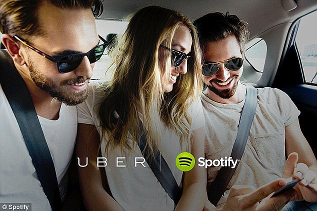
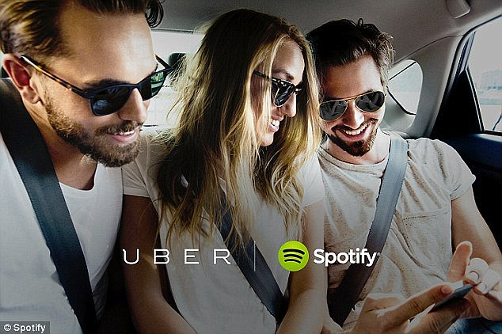
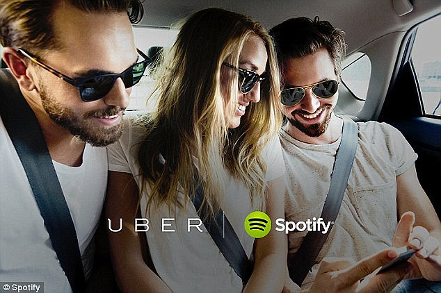

A lot of people are finding out about uber and more and more people are using the app day by day. I used to live in Portland, therefore most of the riders that I got were people my age. Some were nice and very polite and always tipped me good. On the other hand I have had my fair share of rude customers that don't care about life. Old folks were always the ones the request then cancel, I still have no clue its always them who do that but that is how it's been.
Most people that I had were pleased and satisfied enough to have given me 149 five star trips. The more 5 star trips you get the better and the more money uber will give you. They also one time allowed a feature called "double tipping" which basically meant uber matching your tip with the same amount. For Example, If I had a $10 tip from a rider uber will throw me another $10 so I made twenty. They have definitely been the perfect second time job for me.
You are your own boss when it comes to going to work and picking your hours. You work whenever you want and take a break or even stop working at any moment. All you need to do is go online/offline.
Back To Homepage